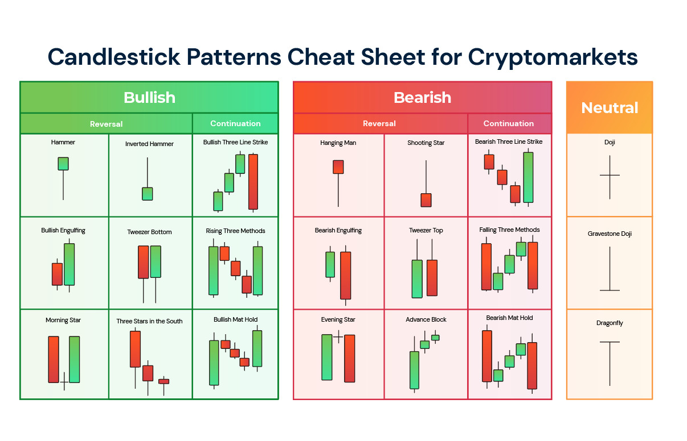

Un candlestick (ou chandelier japonais) est une représentation graphique des variations de prix d'un actif boursier sur une période donnée. Chaque bougie présente quatre éléments essentiels :
Les bougies peuvent être utilisées pour identifier des tendances et des signaux de marché. Si la bougie est généralement verte ou blanche, cela signifie que le prix de clôture est supérieur au prix d'ouverture (marché haussier). En revanche, une bougie rouge ou noire indique que le prix de clôture est inférieur à l'ouverture (marché baissier).
Les traders utilisent des combinaisons de bougies pour détecter des modèles spécifiques qui peuvent signaler des changements de tendance. Ces modèles incluent, entre autres, :
Voici une illustration des principaux patterns de bougies. Cette image vous permettra de mieux comprendre les différents types de formations de bougies que vous pouvez rencontrer dans les graphiques.
